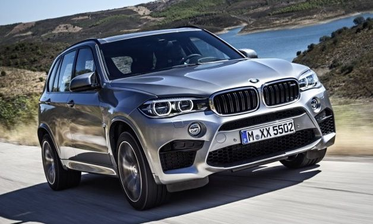
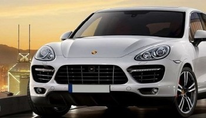

BMW X7 |
|
 more images |
TheBMW x7is an upcoming sport utility vehicle manufactured by BMW. In March 2014, BMW confirmed that the X7 would be produced with a likely on-sale date in 2018.[1][2][3] The X7 is essentially a BMW 7 series SUV, competing against the likes of the Mercedes Benz GL/GLS and the upcoming Audi Q8. It also competes with the Range Rover, Cadillac Escalade, Lexus LX, and Lincoln Navigator. It will be built at the BMW US Manufacturing Company plant in Greer, South Carolina. The X7 will have standard three rows of seats and will be built on the same platform as the X5 and X6.[4][5] It will be the first BMW SUV with an available V12 engine.[6] Bayerische Motoren Werke AG (German pronunciation: [ˈbaɪ̯ʁɪʃə mɔˈtʰɔʁn̩ ˈvɛɐ̯kə] (About this sound listen); translated as Bavarian Motor Works in English[3]), usually known under its abbreviation BMW (German pronunciation: [ˈbeːˈʔɛmˈveː] (About this sound listen)), is a German luxury vehicle, sports car, motorcycle, and engine manufacturing company founded in 1916. It is one of the best-selling luxury automakers in the world.[4] The company is a component of the Euro Stoxx 50 stock market index.[5] Headquartered in Munich, Bavaria, BMW is the parent company of Mini and Rolls-Royce Motor Cars. The company produces motorcars under the BMW Motorsport division and motorcycles under BMW Motorrad, and plug-in electric cars under the BMW i sub-brand and the "iPerformance" model designation within the regular BMW lineup. |
PORSCHE Cayenne 2018 |
|
 more images |
The Porsche Cayenne (Type 9PA [Designated 955 in online forums, not recognized by Porsche Cars AG]) is a mid-size luxury crossover sport utility vehicle produced by the German manufacturer Porsche since 2002, with North American sales beginning in 2003. It is the first V8-engined vehicle built by Porsche since 1995, when the Porsche 928 was discontinued. It is also Porsche's first off road Varient sports car since its Super and Junior tractors of 1950s, and the first Porsche with four doors. Since 2008, all engines have featured direct injection technology. The second-generation Cayenne (Type 92A) was unveiled at the 2010 Geneva Motor Show in March following an online reveal. Although the Cayenne shares its platform, body frame and doors with the similar Volkswagen Touareg and Audi Q7, all other aspects of vehicle design, tuning and production are done in-house at Porsche. The second generation received a facelift in 2014 with minor external changes, and introduced a new plug-in E-Hybrid version, with its public launch at the Paris Motor Show.[1] First generation (2002–2010) The Porsche Cayenne entered the market with mixed anticipation. However, it soon proved that it was the performance vehicle among SUVs and was praised for its excellent handling and powerful engines.[2] The lineup initially consisted of the V8-powered Cayenne S and Cayenne Turbo. Later in the model cycle, VR6 and diesel-powered versions joined the lineup. The base model is powered by a 3.2-L VR6 engine producing 250 PS (184 kW); modifications in the exhaust manifold allow power to peak at 6700 rpm. Acceleration from 0 to 60 mph (97 km) is approx 7.5 seconds with manual transmission and 8.1 seconds with the Tiptronic S. |